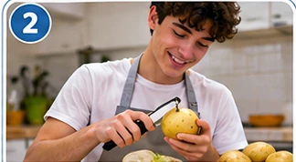
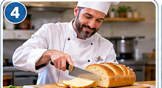
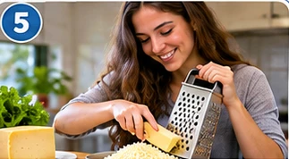
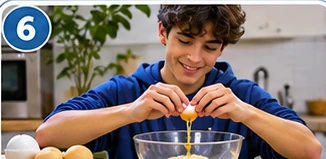
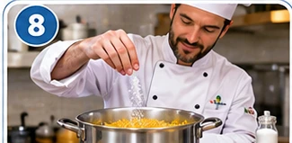
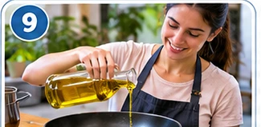
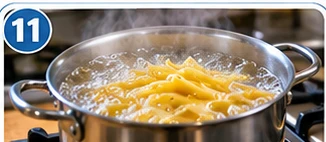
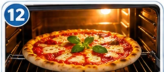
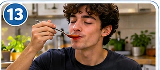

1. LAVARE
to wash
La ragazza lava i pomodori nel lavandino.
Ingredienti / cibo: pomodori
Utensili / oggetti: lavandino
Coniuga il verbo ↗Utensili / oggetti: lavandino
Guarda le fotografie, impara i verbi e riconosci gli ingredienti e gli utensili della cucina.
to wash
La ragazza lava i pomodori nel lavandino.

to peel
Il ragazzo sbuccia una patata con il pelapatate.
to cut
La donna taglia le carote con il coltello sul tagliere.

to slice
Il cuoco affetta il pane con il coltello.

to grate
La ragazza grattugia il formaggio con la grattugia.

to crack
Il ragazzo rompe le uova nella ciotola.
to mix / stir
La mamma mescola gli ingredienti con il cucchiaio.

to add
Il cuoco aggiunge il sale alla pasta.

to pour
La ragazza versa l’olio nella padella.
to fry
Il papà frigge le uova nella padella.

to boil
L’acqua bolle nella pentola per la pasta.

to cook / bake
La pizza cuoce nel forno.

to taste
Il ragazzo assaggia il sugo con il cucchiaio.
to serve
La donna serve la cena nei piatti.
to eat
La famiglia mangia insieme in cucina.
Le fotografie sono ritagliate dal poster illustrato. I nomi degli oggetti si riferiscono agli elementi principali di ogni scena.